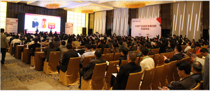
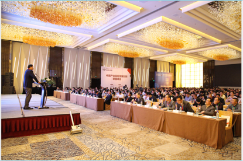
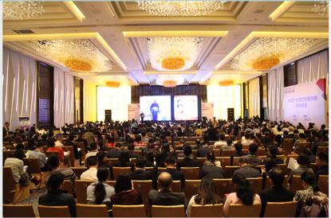
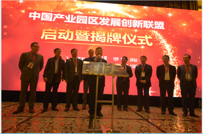

中国产业园区大会是最专业，客商资源最丰富,行业规模最大的产业园区、产业地产盛会,始于2007年，由中国产业园区发展创新联盟发起，参与群体涵盖各个地方政府,开发区,产业地产商,服务商，行业企业,投融资机构等,共同探讨招商引资,企业投资选址,产业地产行业发展,政府金融等专业性话题。2016中国产业园区大会将于11月上海举办，并且整合其他行业活动，将打造中国招商引资规模最大，效果最佳的5000人年度盛会。
联盟介绍： 中国产业园区发展创新联盟（CIPA)是园区大会组委会联合上海、长三角的业内人士，包括新型的创客园区的投资人管理者、园区运营专家、金融投资机构专家、园区规划设计及建设专家、招商引资专业机构和专家等，于2015年11月共同发起成立。 中国产业园区发展创新联盟聚集多方行业资源，系统地站在园区的角度给联盟会员提供支持、服务与合作，旨在让联盟发起机构、会员单位与各个园区形成互助共赢的新局面；同时促进联盟内部信息和技能分享，互助协作交流，更好推动行业进步。
联系方式： 联系人：王梦怡 联系电话：021-61370596 邮箱：cipc@cdmc.org.cn
   